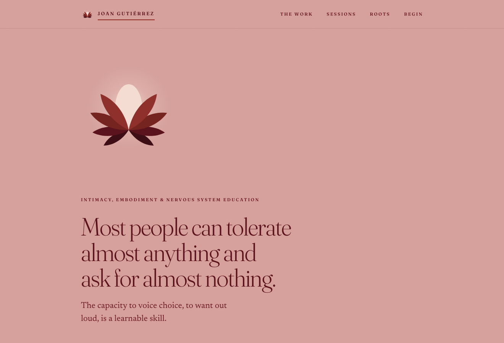
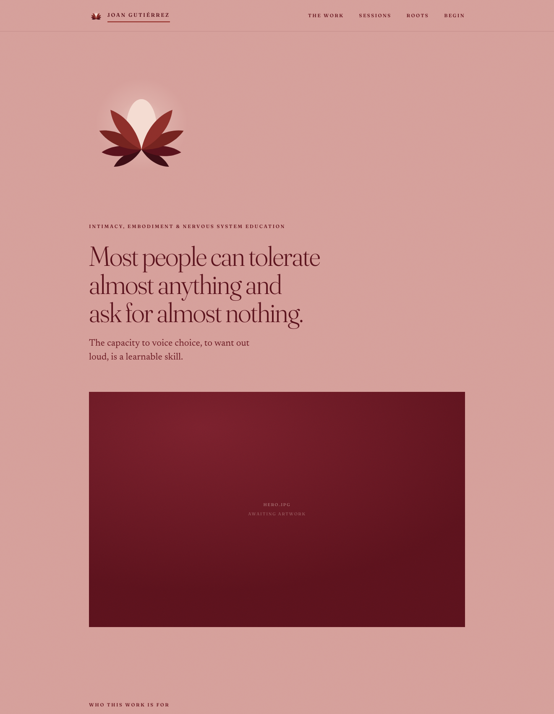

Case study · 2026 · client
Joan Gutiérrez
A brand and marketing site for an intimacy, embodiment, and nervous-system educator — warm, calm, and editorial, built to carry the tone of the practice.

Overview
A home for a tender kind of work
Joan Gutiérrez teaches intimacy, embodiment, and nervous-system work. She needed a site that could hold the weight of that subject — calm enough for a regulated nervous system, warm enough to feel human, and clear enough to turn a curious visitor into a conversation. I designed and built it end to end.
Draft note (ask) — the outcome: how the site was received, whether it changed enquiries or bookings, what Joan said about it.
Who it's for
The visitor arrives tender
Someone considering this work is often reaching toward something vulnerable — “the capacity to voice choice, to want out loud.” So the site's job isn't to sell hard; it's to make that person feel met, oriented, and safe enough to take one small step. That framing shaped every choice, from the pace of the copy to the softness of the colour.
Draft note (ask) — the real brief: what did Joan come to you wanting? Any constraints (timeline, must-haves, her own references), and how you two arrived at the direction.
The design
A palette and a pace that regulate
A colour that does emotional work. A soft, dusty rose — warm, low-arousal, intimate — instead of clinical white or a loud brand hue. It signals safety before a word is read.
A literary serif, at rest. A high-contrast serif carries the big statements — “Most people can tolerate almost anything and ask for almost nothing.” — giving the words room and gravity. This is writing to be felt, not scanned.
A calm architecture. “Four ways in” turns a services menu into a gentle set of doorways; “Begin with a conversation” makes the primary action a low-pressure discovery call, not a hard CTA. A quiet lotus mark anchors the identity without raising its voice.

Draft note (ask) — the decision you're proudest of, and one you went back and forth on. (E.g. what to lead with; how far to push the rose; whether to name the work plainly or evocatively.)
The build
Fast, responsive, easy to keep
Designed and built as a static site in HTML, CSS, and JavaScript, so it loads instantly, reads well on a phone, and stays simple for the practice to maintain — no framework or CMS overhead where none is needed.
Reflection
What I'd carry forward
Draft note (ask) — 2–4 sentences in your voice: designing for a sensitive subject, working with a client on tone, what you learned about restraint.